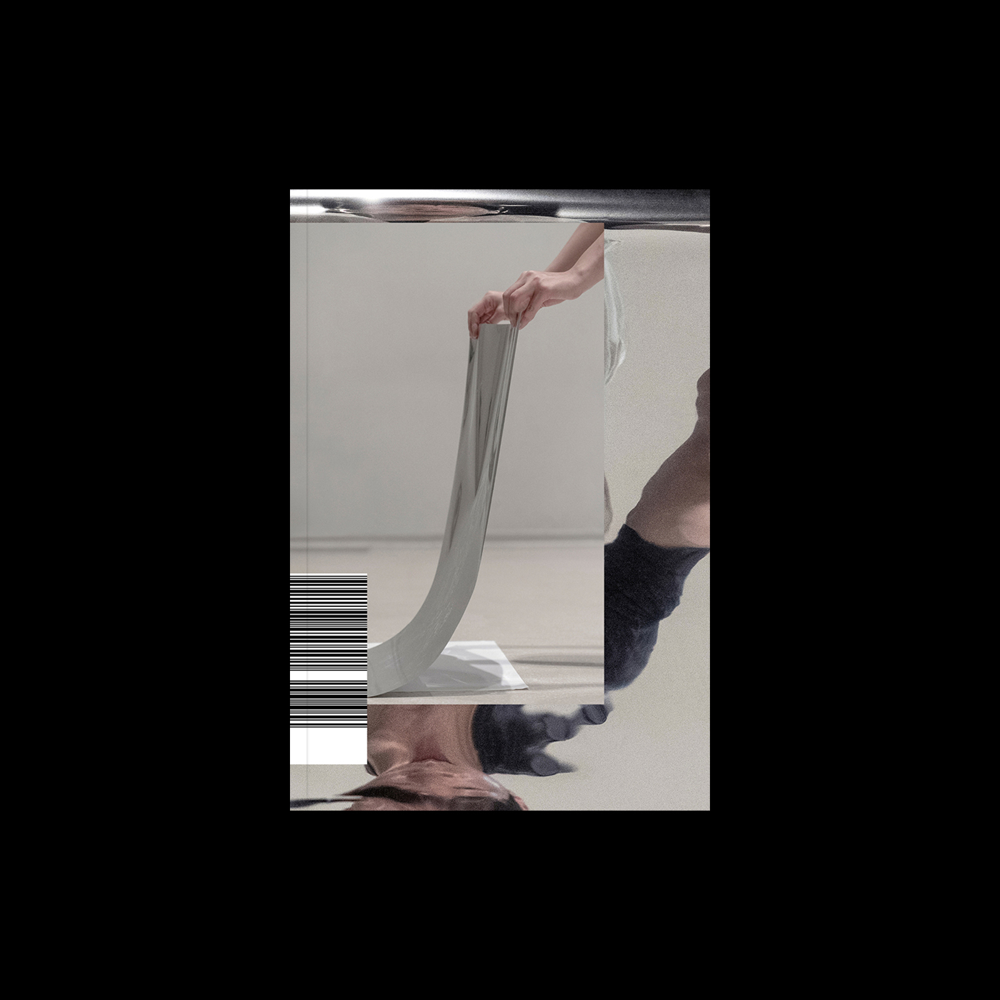
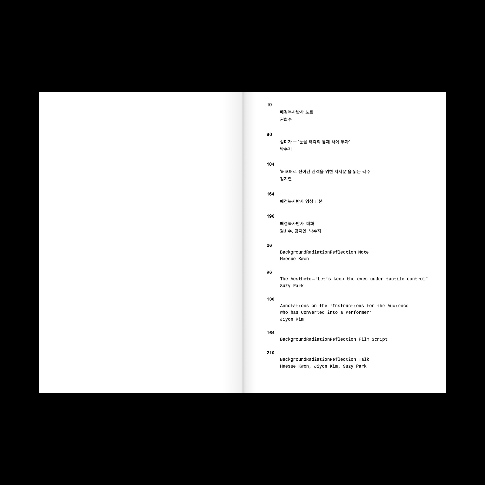
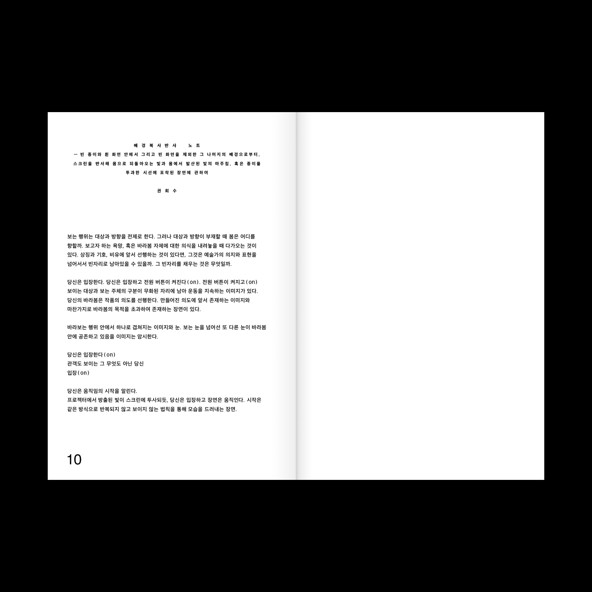
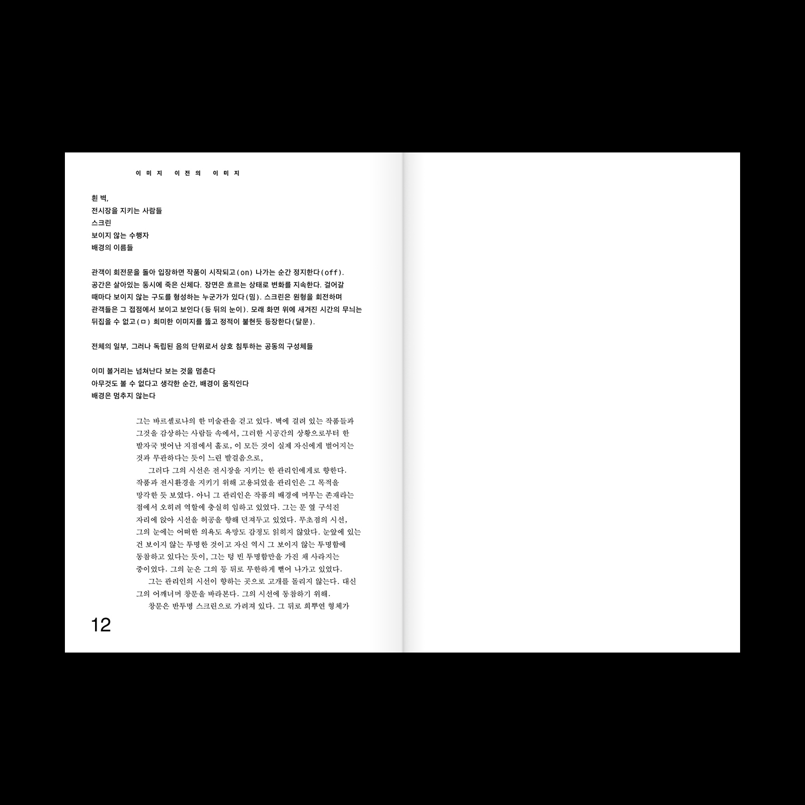
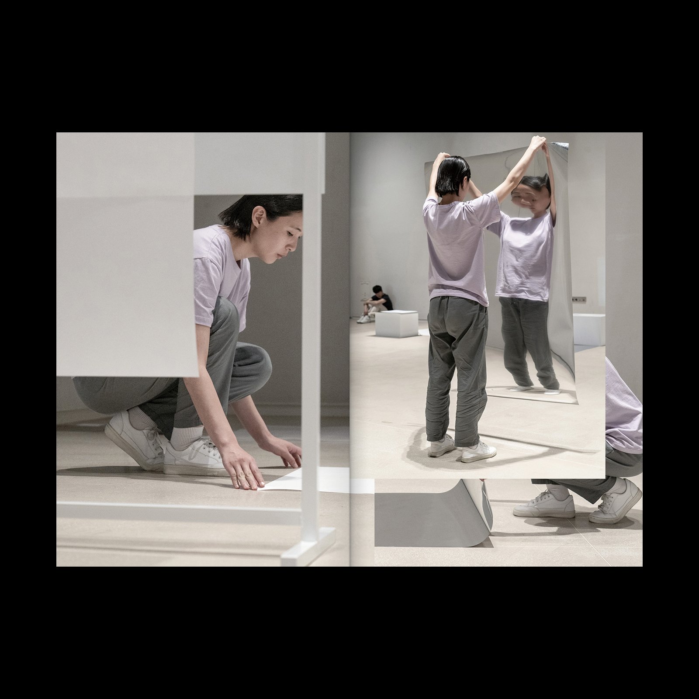
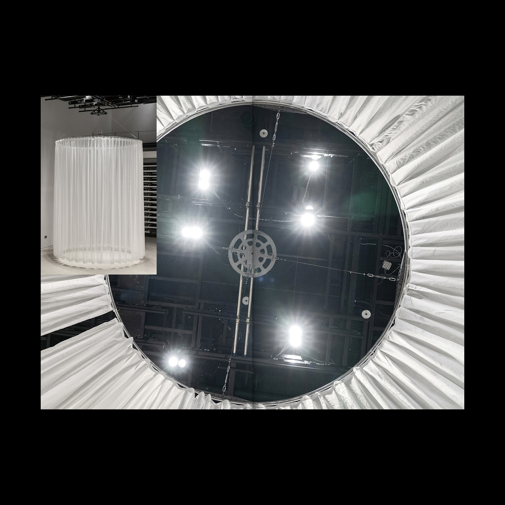
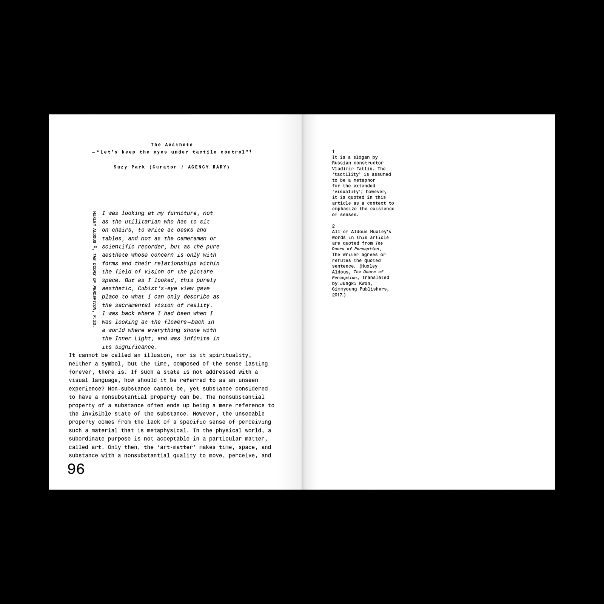
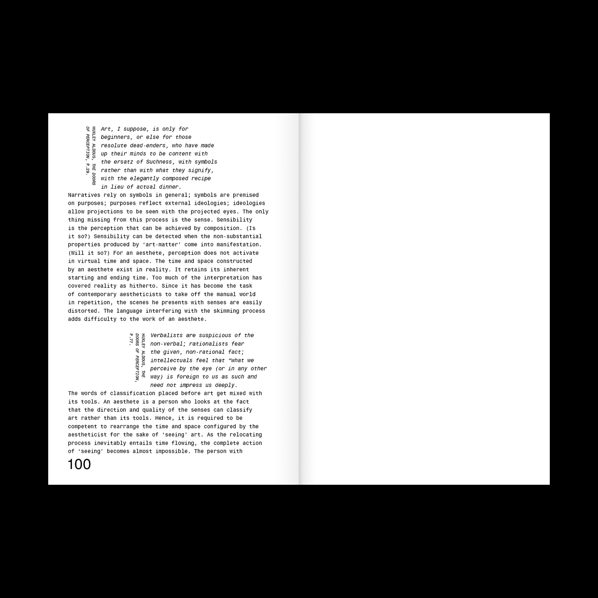
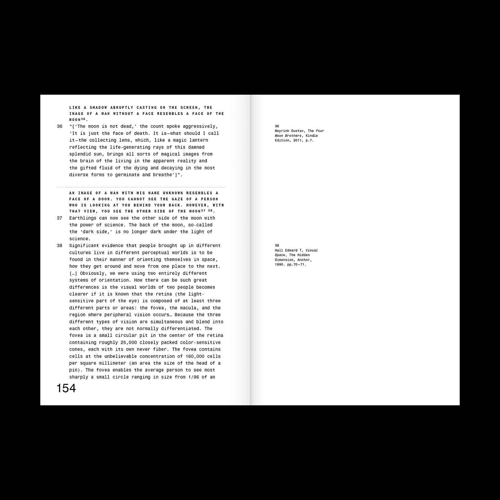
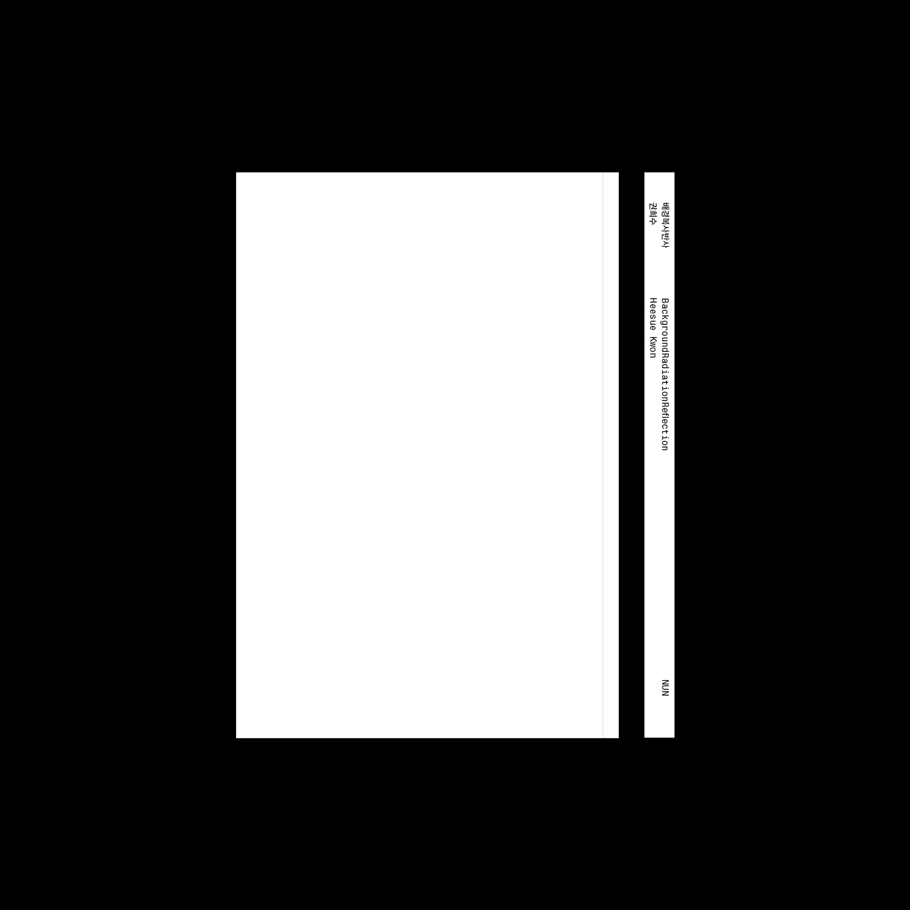

Publication:
Background Radiation Reflection
배경복사반사
저자: 권희수, 김지연, 박수지
분야: 예술서적
출판사명: 눈(NUN)
출판일자: 2021.8.27
정가: 20,000원
페이지수: 232 p
판형: 152 x 225 mm
판수: 500부
제본: PUR 제본
Isbn: 979-11-974505-0-1 93600
Background Radiation Reflection
Author: Heesue Kwon, Jiyeon Kim, Suji Park
Category: Art Books
Publisher: NUN
Date of Publication: 2021.8.27
List Price: 20,000 KRW
Page Count: 232 p
Format: 152 x 225 mm
Printing: 500 copies
Binding: PUR binding
Isbn: 979-11-974505-0-1 93600











배경복사반사는 흰 빛으로부터 출발한 이미지의 기원이 배경적 시점으로 어떻게 확장되는지 그 사유와 단상을 엮은 책이다. 배경복사반사, 이 제목은 우주 탄생 이후 처음의 빛인 배경복사에너지에서 그 기원을 두고 있다. 이 빛은 우주 전체에 고르게 퍼져 있고 어느 방향에서도 볼 수 있다. 그리고 현재는 전파에너지가 되어 텔레비전을 비롯한 곳곳에 스며들어 있다. 이 책은 배경복사에너지처럼 보이지 않지만 존재하는, 중심 주변을 돌고 있는 익명의 대상과 그 시선들을 소환한다. 배경복사반사는 플랫폼엘 컨템포러리 아트센터에서 진행되었던 전시퍼포먼스 «배경복사반사»와 이를 영상화한 ‹배경복사반사› 대본과 대담, 그리고 3편의 글과 사진으로 구성되어 있다. 이 책은 작업 구상 노트이자 에세이 ‹배경복사반사 노트›, 예술가의 시점에서 작품을 예술 자체에 대한 질문으로 확장시킨 박수지의 ‹심미가›, 관객들을 향해 쓰여진 스코어를 주석으로 덧붙인 김지연의 ‹'퍼포머로 전이된 관객을 위한 지시문'을 읽는 각주›, 영상작업 ‹배경복사반사›의 스크립트인 ‹배경복사반사 영상 대본› 그리고 배경복사반사 프로젝트 전반에 관한 권희수, 김지연, 박수지의 대화를 포함한다. 또한 퍼포먼스에서 중심 소재로 활용되었던 종이 (스크린, 가림막, 투과지, 반사지)의 소재적 특성은 책의 구조에 반영되어 비가시적인 상태로서 읽는 감각에 동행한다. 배경복사반사는 빛과 이미지 그리고 배경과 다시 반사되어 되돌아오는 궤적을 순환하며 몸의 감각으로 확장되는 새로운 보기의 방식에 질문을 던진다.
Background Radiation Reflection is a book that compiles the thoughts and thoughts on how the origin of an image starting from white light expands to a background viewpoint. Background Radiation Reflection, this title, originates from background radiation energy, the first light after the birth of the universe. This light is evenly distributed throughout the universe and can be seen from any direction. And now, it has become radio energy and permeates everywhere, including televisions. This book summons anonymous objects and their gazes that are invisible but exist like background radiation energy and revolve around the center. Background Radiation Reflection consists of the exhibition performance «Background Radiation Reflection» held at Platform L Contemporary Art Center, the script and interview of the video ‹Background Radiation Reflection›, and three articles and photographs. This book includes the work’s concept notes and essays, “Background Reflection Notes,” Park Su-ji’s “Aesthetics,” which expands the work from an artist’s perspective into a question about art itself, Kim Ji-yeon’s “Footnotes Reading ‘Instructions for the Audience Transformed into Performers’” which annotates the score written for the audience, “Background Reflection Video Script,” which is the script for the video work “Background Reflection,” and conversations among Kwon Hee-soo, Kim Ji-yeon, and Park Su-ji about the Background Reflection project in general. In addition, the material characteristics of paper (screen, blind, transparent paper, reflective paper) that were used as a central material in the performance are reflected in the book’s structure, accompanying the sense of reading it as an invisible state. Background Reflection questions a new way of seeing that expands into bodily sensations by circulating light, images, and trajectories that reflect back to the background.